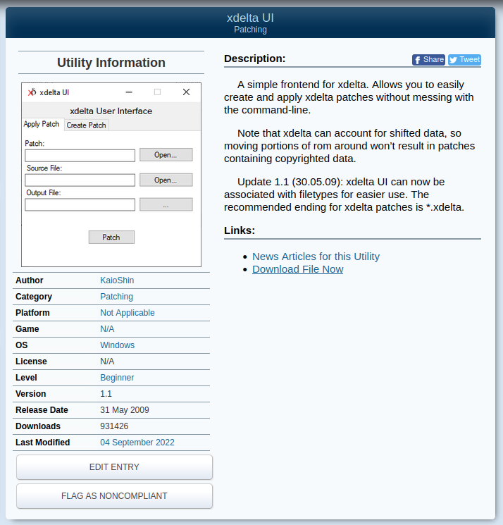
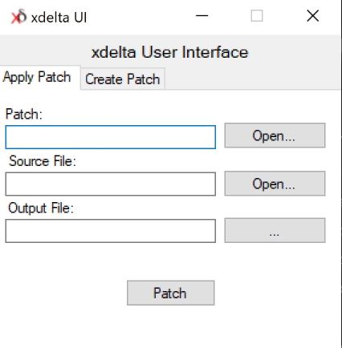
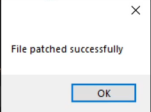

Video guide available here:
First, download the .xdelta file for the game version you want to patch, either PSP or PS3. You can find a link to the patch on the main page, under the "xdelta" section.
Then, download the "xdelta UI" patching utility from romhacking.net and extract both xdelta.exe and xdeltaUI.exe.
Now open xdeltaUI.exe, you should see the following:
Fill the first box with the original japanese .iso file,
the second with the .xdelta file you downloaded,
and for the last one, you should put in the path to the file you want to save your english game as.
Hit patch, and wait. After a bit you should get a popup that says it's done, like so:
Now you can open the output file in your PSP emulator.
Keep in mind the PS3 version also has to be run in a PSP emulator.
Of course, if you want to play on a real PSP, you will need to patch the PSP version.